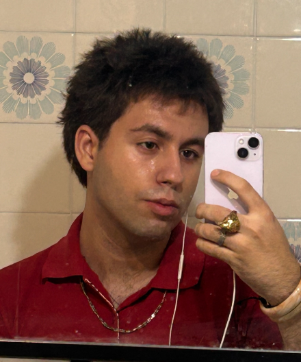

Un logotipo que funciona igual bordado en la etiqueta de una prenda que en movimiento en un reel: reconocible incluso a 32 píxeles, con una estela que da juego para animar cada lanzamiento.
Mayúsculas condensadas, contraste duro blanco/negro y la estrella como único ornamento. Nada decorativo: todo lo que aparece se puede bordar, serigrafiar o animar.
Identidad completa para una marca de streetwear con estética Y2K: logotipo, versión animada y un sistema gráfico que sobreviva tanto en prenda como en redes.
Una estrella fugaz como símbolo. La estela comunica velocidad y ambición — una comunidad que corre por delante — y deja un trazo natural para animar la construcción del logo en After Effects.
En lugar de vender la serie desde fuera, el rediseño la cuenta desde dentro de Lumon: retícula estricta, mayúsculas, un único acento de color. El cartel como documento corporativo — el horror está en el orden.
El Estilo Tipográfico Internacional nació para transmitir neutralidad y eficiencia: exactamente lo que Lumon finge ser. La forma es el mensaje.
El cartel original vende misterio de prestigio: oscuridad, rostro dividido, serifa elegante. Comunica «drama premium», pero no dice nada del mundo de la serie.


Cinco deslizamientos deliberados: abre el gesto (mano y anillos), respiran paisaje y producto, y cierra el momento social. Cada imagen aguanta sola, pero el orden cuenta una historia.
Sin presupuesto de shooting: fotografía generada con IA y corregida en Photoshop para unificar luz, grano y color entre las cinco piezas.
Contenido de Instagram para una joyería maximalista de Barcelona. El reto: transmitir lujo artesanal con presupuesto cero de producción fotográfica.
Un carrusel que se comporta como un editorial de moda en miniatura: la primera imagen debe funcionar sola como portada del feed y ganarse el deslizamiento.


Tratar la tipografía como imagen: cuerpos enormes, una retícula que se rompe con intención y aperturas de sección modeladas en 3D con Blender.
Cada pliego alterna orden y ruptura, manteniendo la esencia de la cabecera original. Una revista que pide ser hojeada, no solo leída.
Rediseñar la revista OCTANE como ejercicio intensivo de una semana: llevarla del editorial clásico al brutalismo sin perder la identidad de la cabecera.
Entre 1 y 7 días de plazo. La restricción de tiempo obligó a decidir rápido y a defender cada decisión: no hay una sola página «segura».
Liquid Glass de iOS: superficies translúcidas con blur, bordes finos y una barra de navegación flotante que nunca tapa el contenido. La comida es la protagonista; la interfaz, el cristal del escaparate.
El delivery generalista trata Barcelona como un mercado más de su red global: oferta homogénea, algoritmo genérico y fatiga de decisión.
Una curaduría editorial de cocina mediterránea organizada por barrios: menos opciones, mejor elegidas, contadas como lo haría una guía local — no un marketplace.
Todo el sistema está documentado en un manual de identidad de 18 páginas: esencia y tono, naming, justificación del símbolo, construcción, color, tipografía y aplicaciones. Versión 4.0 · uso interno.
«On el cafè troba la llum.» Un lugar donde vive el sol.
Abrir el manual en grande →
Solell comparte apellido con la joyería: la misma familia, dos rituales distintos. El nombre ya traía consigo el sol, el Mediterráneo y el barrio — solo había que servirlo en taza.
Cercana y en catalán primero. La marca no grita: saluda como se saluda al camarero que ya sabe qué vas a pedir.
Dos piezas lo hacen todo: el monograma S — dos gotas que se encuentran, tipografía serif afilada — y el patrón de trencadís azul, herencia directa del mosaico de Gaudí. Juntas visten vaso, bolsa, delantal y fachada sin repetirse nunca igual.
Las bolsas hablan catalán — «feliços de fer el teu dia especial» — porque la marca es de barrio antes que de franquicia.
Identidad para la cafetería hermana de Solell Jewelry: mismo espíritu mediterráneo, otro ritual. Tenía que sentirse artesanal y de barrio, pero aguantar al lado de las cadenas de especialidad.
Barcelona ya tenía la textura: el trencadís. Azul cobalto sobre blanco roto, un monograma con carácter tipográfico propio, y dejar que el patrón haga el trabajo duro en cada superficie.

Diseñador gráfico de Sabadell, Barcelona. Lo que más me gusta: imágenes corporativas, pósters, mezclar escenas 3D con 2D, motion graphics, webs y UI. Vengo del dibujo y eso se nota — pienso primero en papel. En septiembre empiezo el Grau en Arts i Disseny en la Massana.
Rápido en explorar, lento en decidir: muchas versiones baratas antes de comprometerme con una. Cada proyecto de esta mesa tiene su porqué en las páginas interiores.